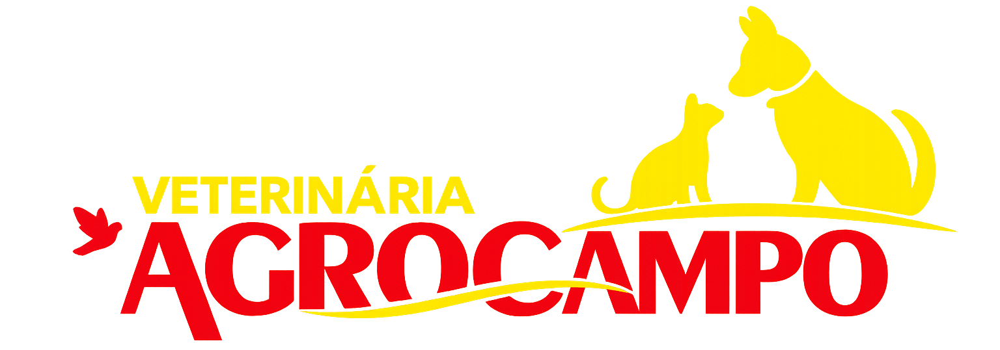
Loja virtual com entrega própria, assinaturas, atendimento por WhatsApp e assistente com inteligência artificial — e um painel onde a loja controla tudo sozinha, sem depender de programador.
O cliente compra pelo celular ou pelo computador, paga por Pix ou cartão e o pedido chega pronto na tela da loja — já separado por cidade e por dia de viagem. A equipe não precisa digitar pedido, calcular frete nem lembrar de cobrar assinatura: o sistema faz isso e avisa quando algo precisa de gente.
Catálogo com linhas Ouro, Prata e Bronze, tamanhos por peso, promoções com prazo, busca que sugere enquanto digita e compra em três passos.
Frete por cidade e por localidade (ilha, povoado), dia de viagem fixo, data calculada na hora e a lista de entregas impressa para o carro.
Assinatura que volta sozinha a cada 30, 60 ou 90 dias — cobrando o cartão ou lembrando o cliente de pagar — e avisos por WhatsApp.
| O que a loja ganha | Como aparece no dia a dia |
|---|---|
| Pedido sem retrabalho | O cliente monta o pedido; a loja só separa e entrega. |
| Frete correto | Cada cidade tem o seu valor; ilhas somam a travessia automaticamente. |
| Rota organizada | Itinerário agrupado por cidade, localidade e rua, com telefone de quem recebe. |
| Estoque confiável | Baixa na separação, alerta de estoque baixo e histórico de movimentos. |
| Cliente avisado | Notificação no site, e-mail e (quando ligado) WhatsApp em cada etapa. |
| Venda fora do horário | A assistente Silvinha atende, indica produto e fecha o pedido sozinha. |
Tudo é editável pela loja. Textos, fotos, banners, preços, cidades, fretes, prazos, promoções e até a ordem das seções da página inicial mudam pelo painel, na hora, sem precisar de programador.
O site se ajusta ao aparelho: no computador as vitrines abrem em quatro colunas; no celular tudo vira uma coluna, o menu vira gaveta e a busca fica à mão. Foi testado de 320 px a 1440 px de largura, sem rolagem lateral.
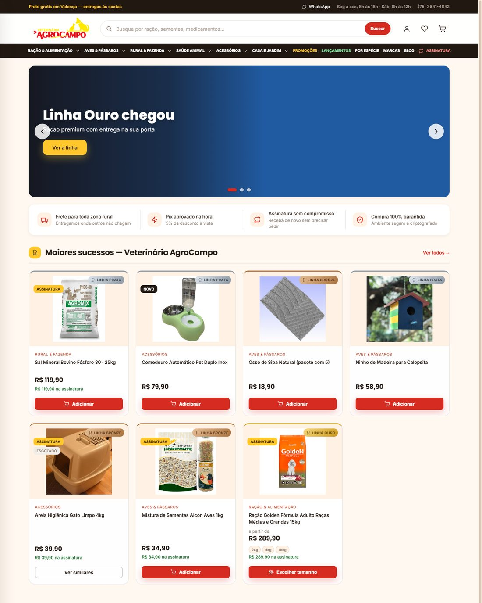
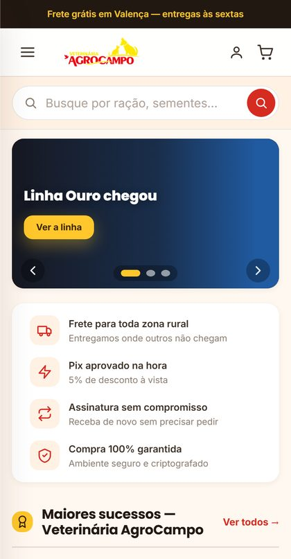
Em Configurações › Vitrines a loja arrasta as seções para cima ou para baixo com setas. Seção sem conteúdo simplesmente não aparece — nada de espaço vazio na página.
Dica comece pelos “Maiores sucessos”: é o bloco que mais vende.
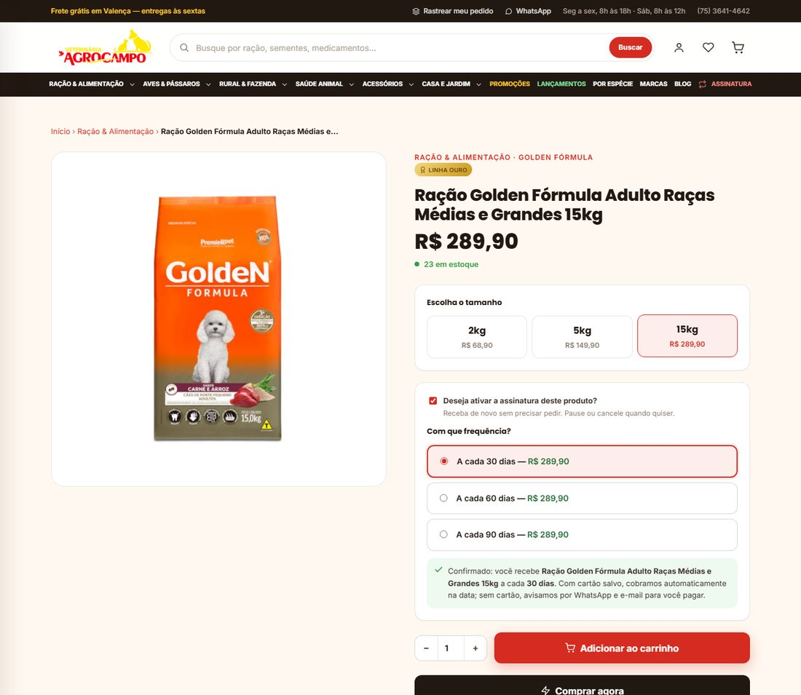
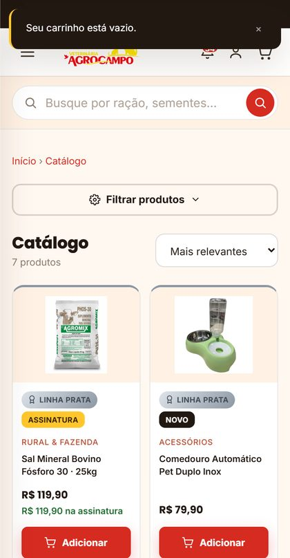
Faltou um item no estoque? O pedido não trava. A loja separa o que tem, o sistema marca o pedido como “falar com o cliente” e um toque no botão abre o WhatsApp com a mensagem pronta para combinar troca ou devolução.
A Silvinha conversa com o cliente na página inicial e nas páginas de produto. Ela só fala do que existe na loja: catálogo publicado, preço, estoque, cidades atendidas e dias de entrega. Não inventa prazo, não dá diagnóstico veterinário e manda para o WhatsApp o que não sabe responder.
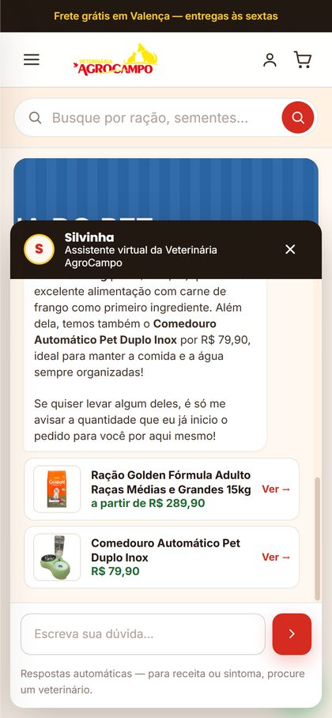
Quando o cliente diz que quer levar, aparece um cartão com foto, preço, tamanho e quantidade e o botão Comprar agora. Se a pessoa ainda não tem conta, o próprio chat cria o cadastro (nome, e-mail, WhatsApp e senha), entra automaticamente e leva ao pagamento — tudo sem sair da conversa.
Onde Painel › Configurações › Silvinha.
Quem confirma é sempre o cliente. A assistente apenas sugere; nada entra no carrinho sem alguém tocar no botão. E as conversas ficam registradas no painel — é a lista das dúvidas reais da sua clientela, de graça.
Entre em agrocampo.online/painel/ com o e-mail e a senha da loja (no site: menu da conta → Painel do lojista). O menu da esquerda tem tudo e o sino avisa o que precisa de atenção.
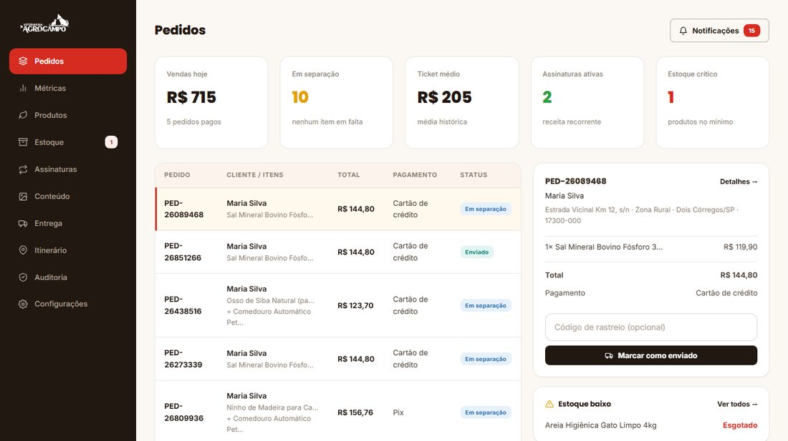
| Menu | Para que serve |
|---|---|
| Pedidos · Métricas | Ver, buscar, marcar como enviado e falar com o cliente (não há aprovação a fazer); e os números do período. |
| Produtos · Estoque | Cadastrar e editar (preço e estoque também direto na lista); ver o que está acabando e repor em um clique. |
| Itinerário · Entrega | A lista de entregas do dia, pronta para imprimir; cidades atendidas, ilhas e avisos. |
| Conteúdo | Banners, promoções, categorias, marcas, espécies, páginas e cupons. |
| Assinaturas · Auditoria | Quem assina o quê e as próximas entregas; e a trilha dos pagamentos, para conferir com o banco. |
| Configurações | Aparência, pagamentos, regras, entrega, vitrines, contato, WhatsApp e Silvinha. |
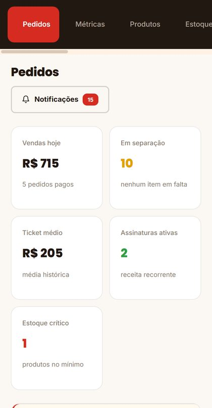
No celular as tabelas viram cartões e os botões ficam do tamanho do dedo: dá para conferir um pedido, repor estoque ou chamar o cliente no WhatsApp de pé, no atendimento.
Importante o painel é a única tela de administração que a equipe precisa.
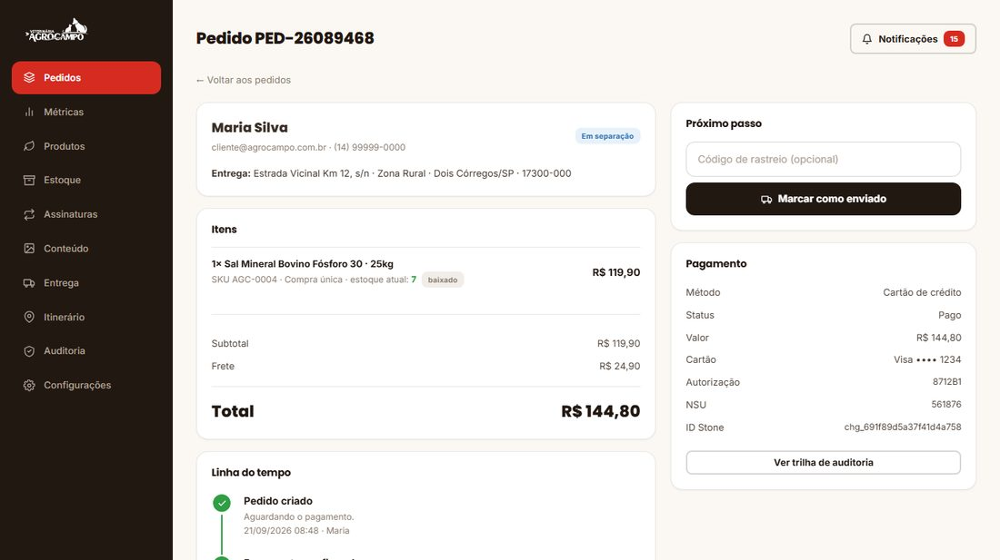
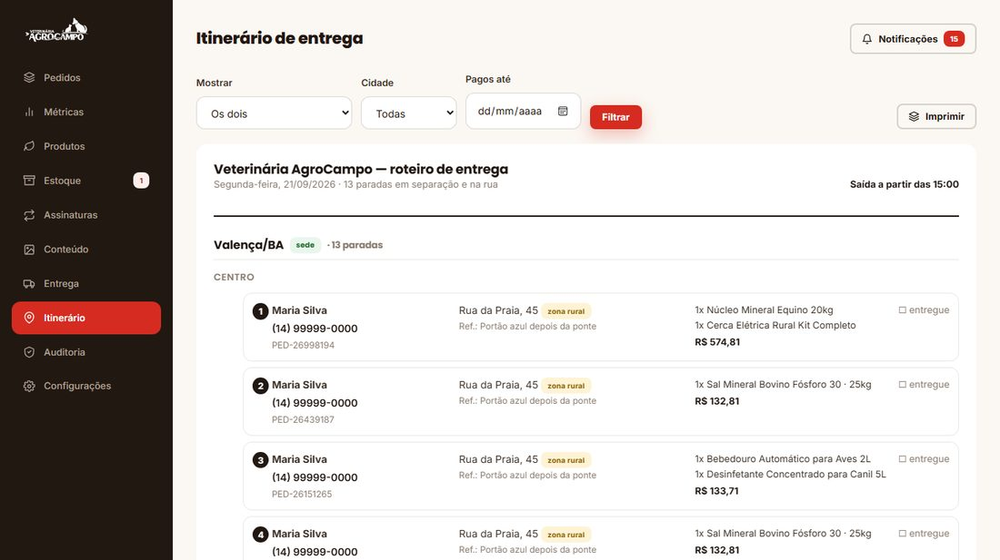
Em Produtos a lista permite mudar preço, estoque, no ar e sucesso na própria linha — útil para o acerto rápido do dia. O lápis abre a ficha completa.
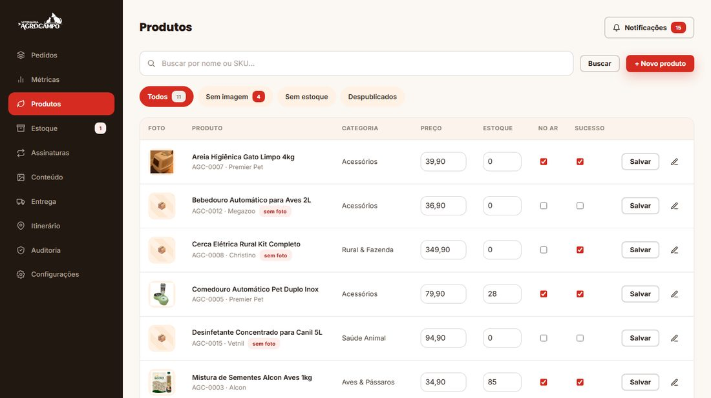
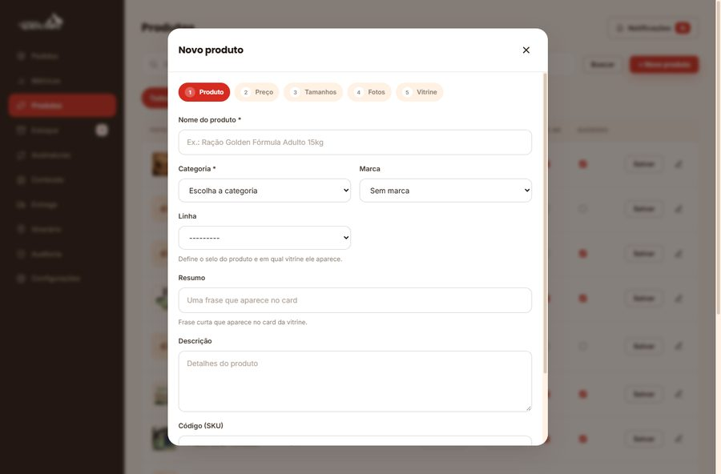
Atalho para destacar uma marca inteira, marque “todos os produtos desta marca em Maiores sucessos” no cadastro da marca.
Nada de tabela dos Correios: você cadastra as cidades que atende, o valor do frete e o dia em que o carro viaja. O site calcula a data sozinho e mostra ao cliente antes de ele pagar.
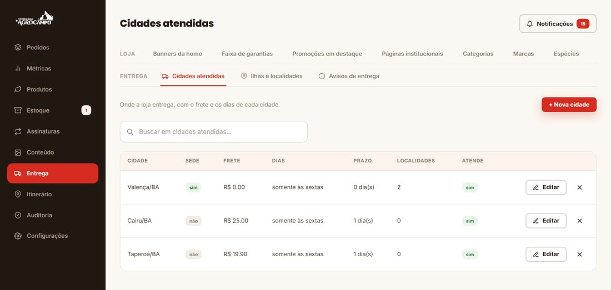
| Campo | O que significa |
|---|---|
| Frete | Valor cobrado. Zero = entrega grátis nessa cidade. |
| Frete grátis acima de | Vazio usa a regra geral da loja; 0 desliga o frete grátis ali. |
| Dias de viagem | Os dias em que o carro vai. Ex.: só sexta-feira. |
| Antecedência | 0 = pode sair no mesmo dia; 1 = a partir do dia seguinte. |
| Observação / Cidade sede | Frase que o cliente lê no fechamento; e qual é a cidade da loja. |
Como a data é calculada. Pedido pago depois da hora de corte (Configurações › Entrega, normalmente 14h) conta como do dia seguinte; soma-se a antecedência da cidade; a data cai no próximo dia de viagem. Ilha ou povoado soma o acréscimo e os dias extras.
Exemplo real: Valença/BA — frete grátis, viagem só às sextas. Pedido na segunda → entrega na sexta da mesma semana.
Ilhas e localidades: cadastre lugares que custam mais (travessia de barco, povoado distante) com um acréscimo em cima do frete da cidade. Avisos de entrega: recados que aparecem no carrinho, no endereço ou no pagamento.
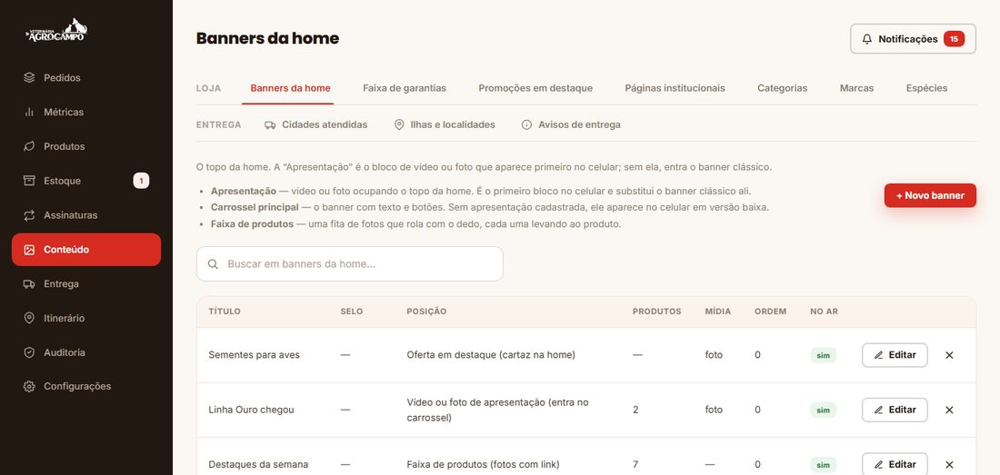
| Posição | Onde aparece |
|---|---|
| Carrossel principal | Cartaz largo (formato 16×5, ex.: 1600×500 px) no topo, com link. |
| Vídeo ou foto de apresentação | Entra no mesmo carrossel; bom para vídeo da loja. |
| Oferta em destaque | Cartazes no meio da página: 1 ocupa a largura toda, 2 ficam lado a lado. |
| Faixa de produtos | Fita de fotos de produtos, cada uma levando à sua página. |
Para tirar um banner do ar não apague: desmarque publicado — ele volta quando você quiser, sem subir a arte de novo.
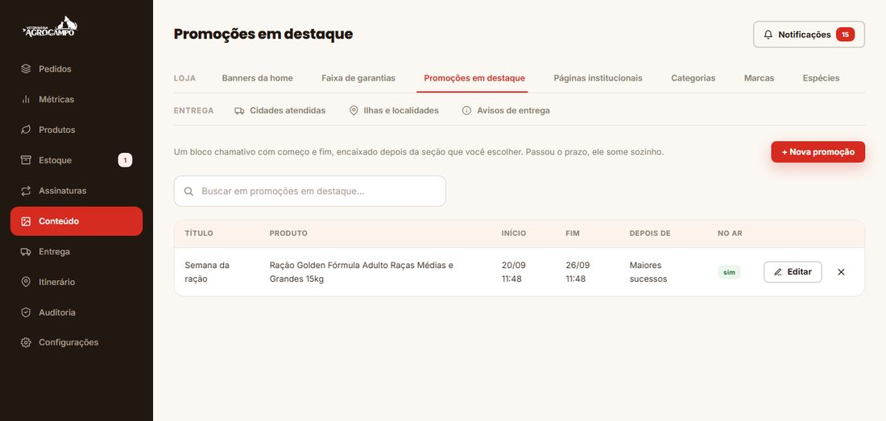
Promoção que se apaga sozinha. Preencha título, texto, imagem (ou escolha um produto), a data de início e a de fim, e diga depois de qual seção ela aparece. Terminado o prazo, o bloco some da página sem ninguém precisar lembrar.
Cada aba guarda um assunto. Mexeu, clique em Salvar — a loja muda na hora.
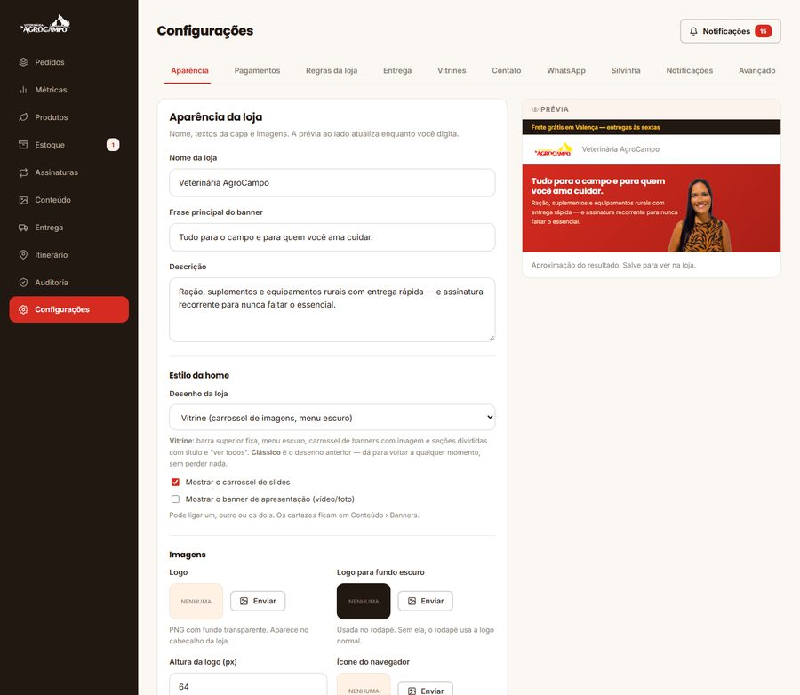
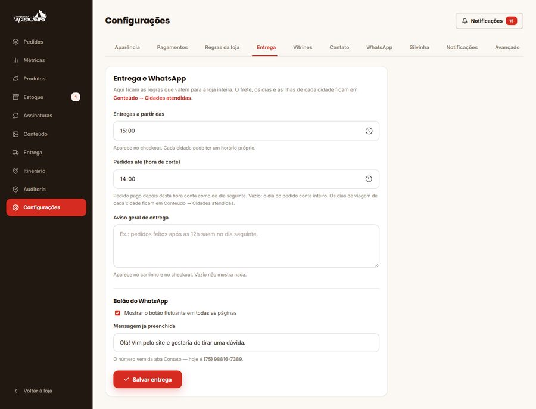
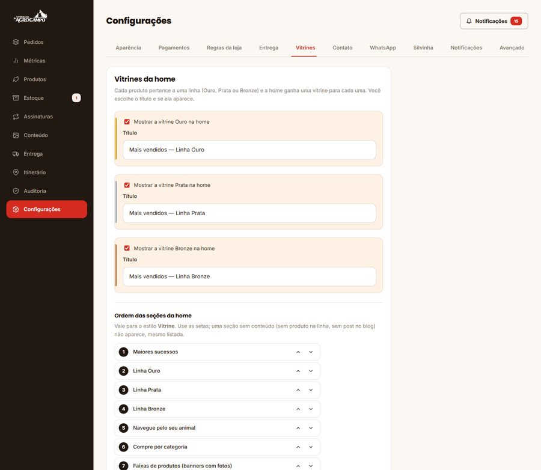
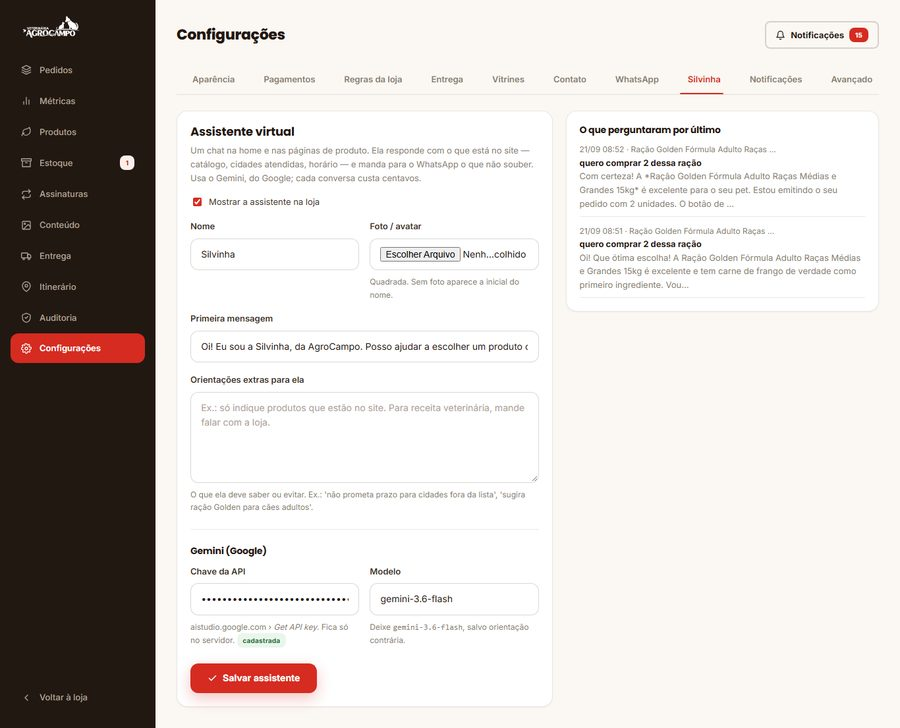
| Aba | Use quando precisar… |
|---|---|
| Pagamentos | …cadastrar as credenciais do banco (Stone) e as parcelas sem juros. |
| Regras da loja | …mudar frete padrão, frete grátis, desconto no Pix ou esconder a assinatura. |
| Contato | …atualizar telefone, WhatsApp, endereço, horário e redes sociais. |
| …ligar os avisos automáticos (página seguinte). |
O sistema pode mandar sozinho: pedido confirmado, item em falta, saiu para entrega e os avisos de assinatura — só para quem autorizou contato no cadastro.
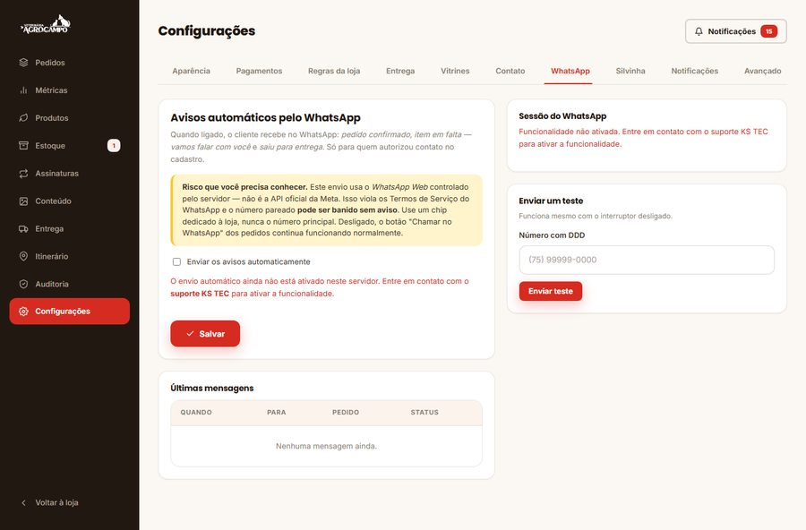
Leia antes de ligar. O envio automático usa o WhatsApp Web controlado pelo servidor — não é o serviço oficial da Meta. Isso contraria as regras do WhatsApp e o número usado pode ser bloqueado. Use um chip só da loja, nunca o número pessoal. Com o recurso desligado, o botão “Chamar no WhatsApp” continua funcionando normalmente.
O cliente marca a assinatura na página do produto (30, 60 ou 90 dias). Todo dia de manhã o sistema cuida delas sozinho:
| Situação | O que o sistema faz |
|---|---|
| Dois dias antes | Avisa o cliente que a assinatura vai renovar. |
| Na data, com cartão salvo | Cobra o cartão e gera o pedido já em separação. |
| Na data, sem cartão | Cria o pedido aguardando pagamento e manda o link para pagar. |
| Cartão recusado | Tenta de novo em 3 dias; após 3 falhas, cancela e avisa. |
Abrir Pedidos, separar o que entrou, olhar o sino e repor o que o Estoque apontar em vermelho.
Abrir Itinerário, escolher a cidade, imprimir e marcar os pedidos como enviados ao voltar.
Trocar o banner, revisar promoções com prazo vencendo e conferir as Métricas da semana.
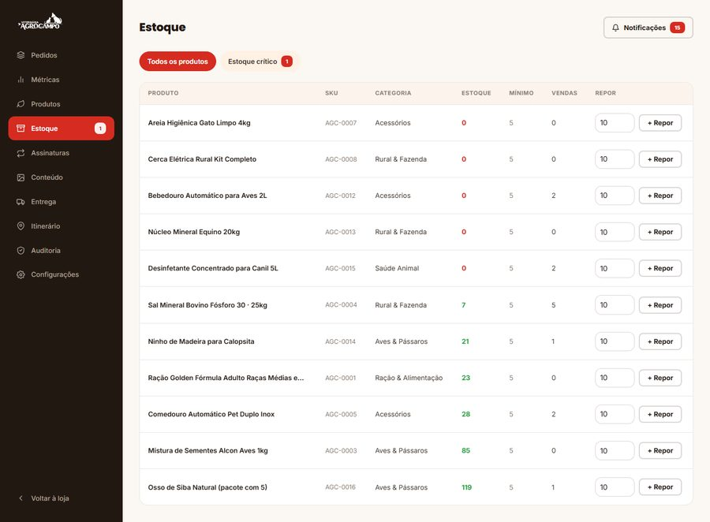
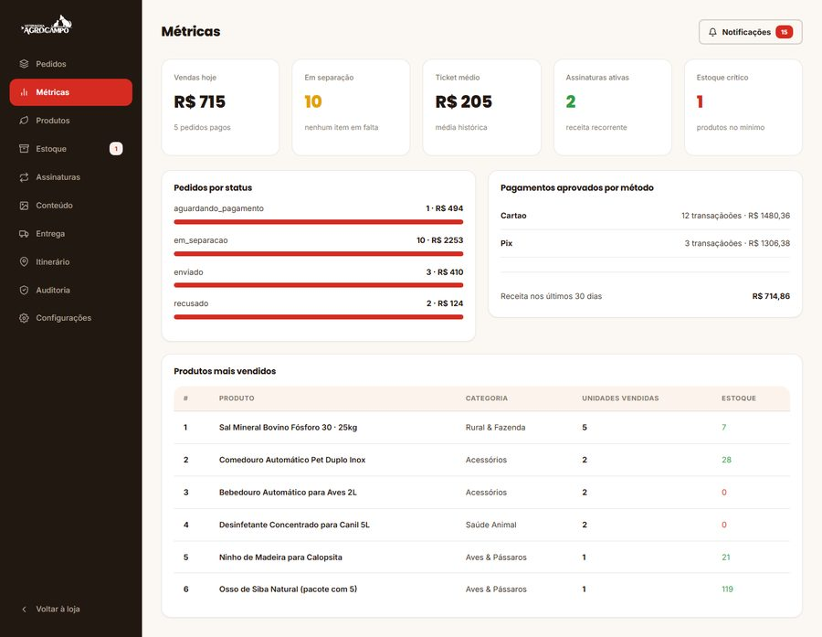
| Situação | O que fazer |
|---|---|
| O banner não aparece na página inicial | Confira se está publicado e se o carrossel está ligado em Aparência. |
| Uma seção sumiu | Ela só aparece com conteúdo (produto na linha, promoção no prazo, post no blog). |
| O cliente não vê frete nem prazo | Falta cadastrar a cidade em Entrega › Cidades atendidas. |
| Quero tirar um produto do ar | Desmarque no ar na lista de produtos — o histórico de vendas fica preservado. |
| Esqueci a senha | Peça a redefinição na tela de entrar ou fale com o suporte. |
Precisa de algo que o painel não faz? Fale com o suporte KS TEC. Ajustes no sistema, novos recursos e manutenção do servidor são conosco — a loja cuida do que vende.
Este documento resume o sistema entregue. O manual completo, com todas as telas
passo a passo, está em docs/manual/MANUAL.md.
Desenvolvimento, hospedagem e suporte
kstec.online